Spleen graphique
Design éditorial
Le coffret tourne autour des thèmes principaux abordés par Charles Baudelaire dans son œuvre soit la mort, l’amour, les femmes et le spleen. Le coffret est composé d’un recueil de poèmes et de 4 posters.
• Le recueil : le livre alterne entre le poème textuel et une interprétation graphique. Elles retranscrivent les émotions et les pensées du poète à travers la forme, la disposition, et les motifs. Les pages sont détachables et peuvent être accrochées ou feuilletées comme des ébauches de l’artiste.
• Les posters : chaque thème que l’artiste aborde est illustré avec un poster unique.
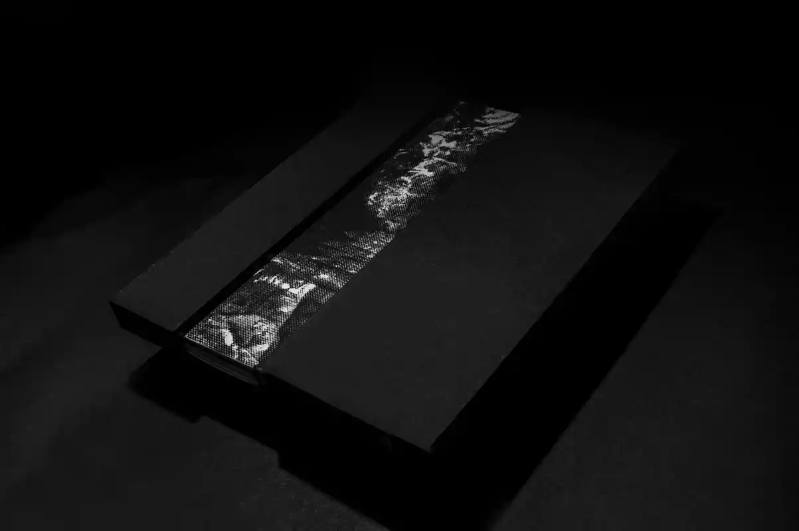
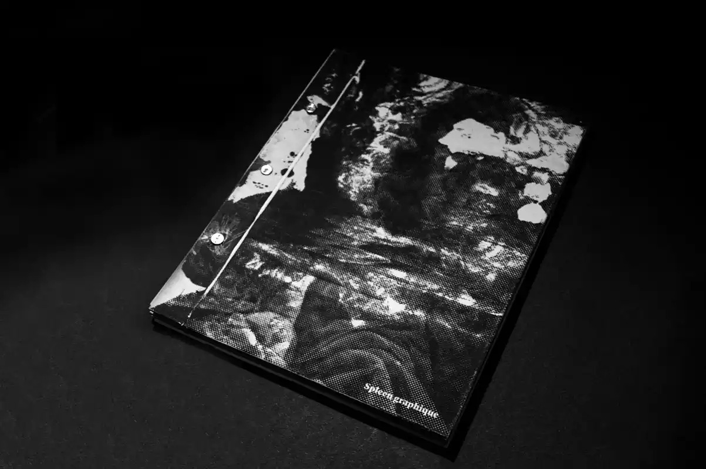
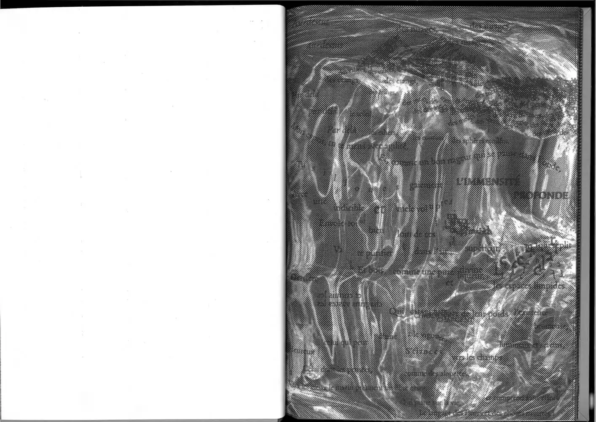
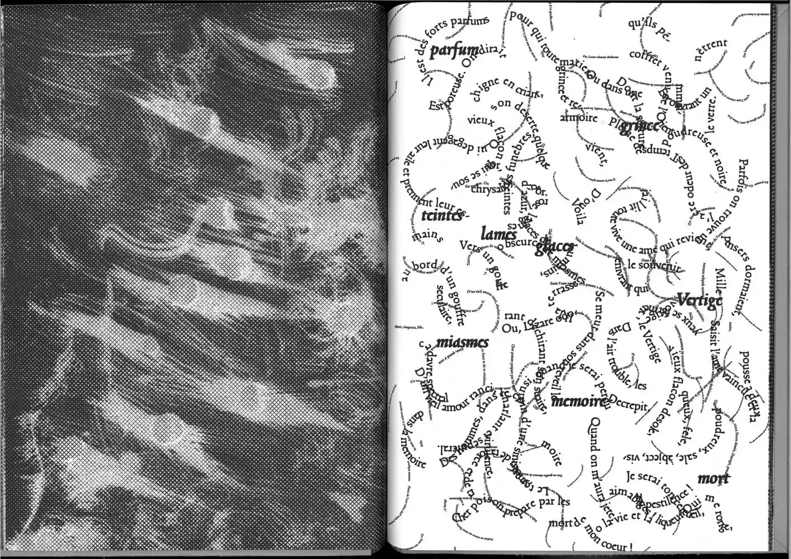
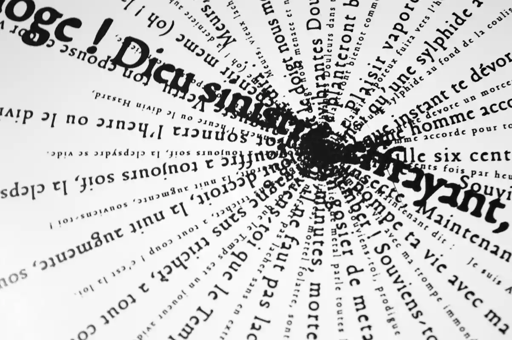
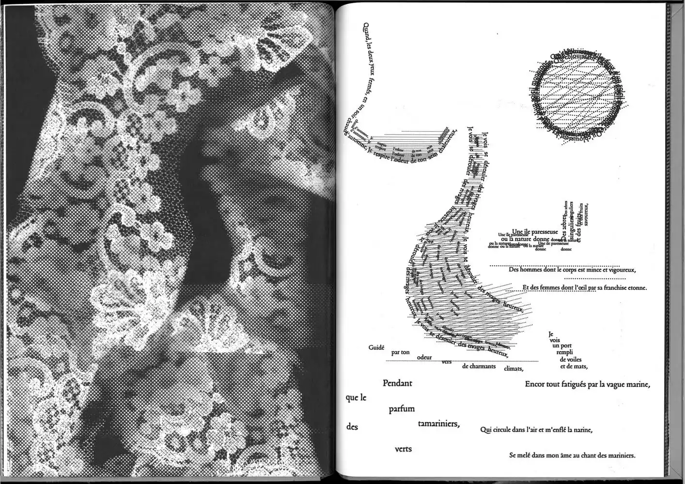
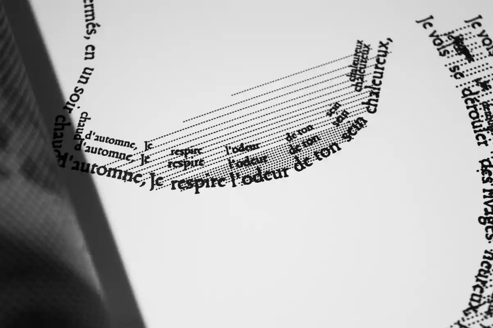
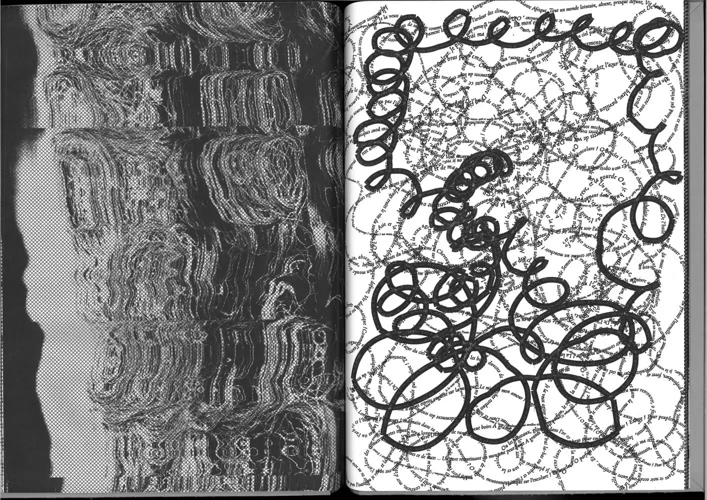
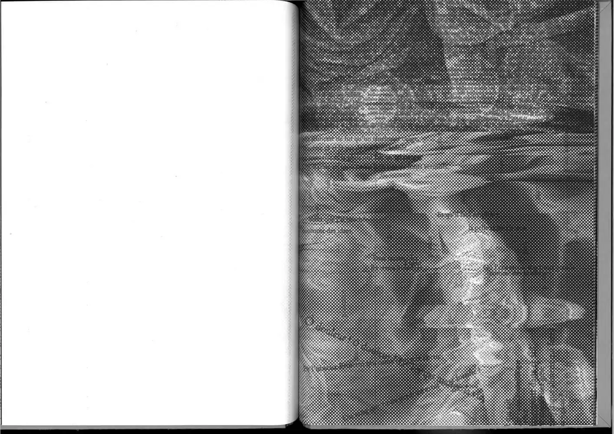
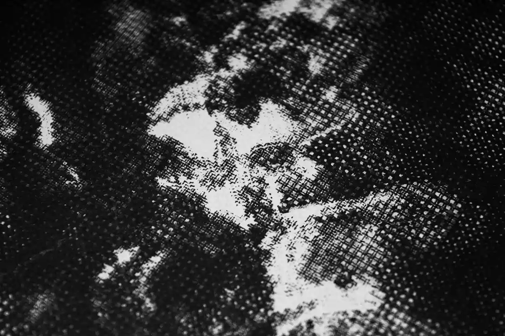
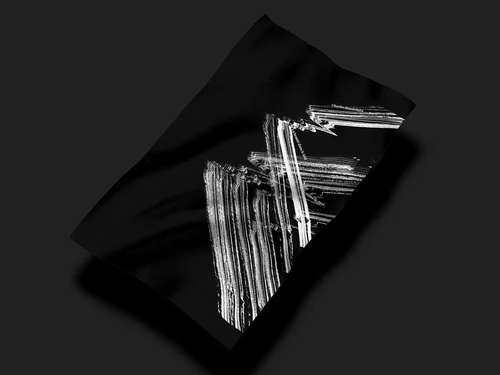
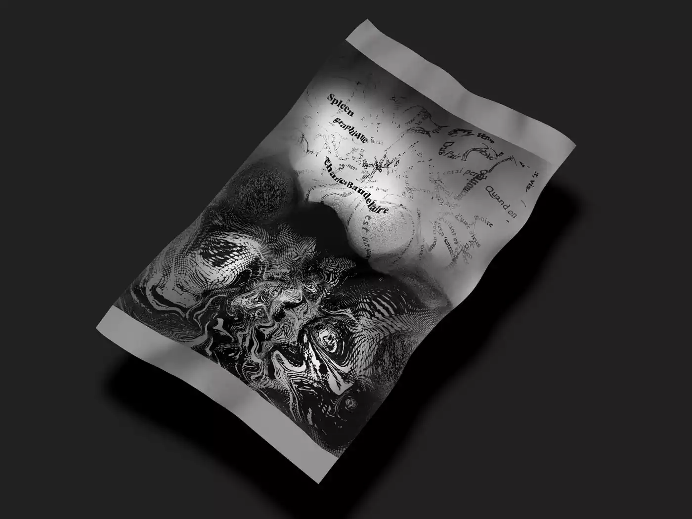
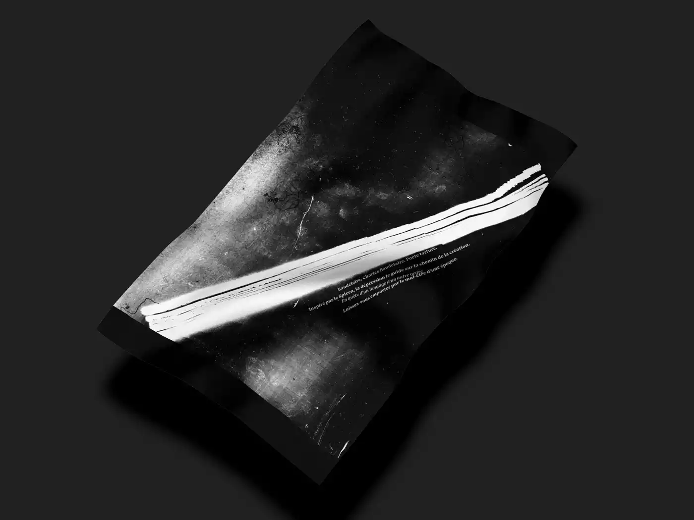
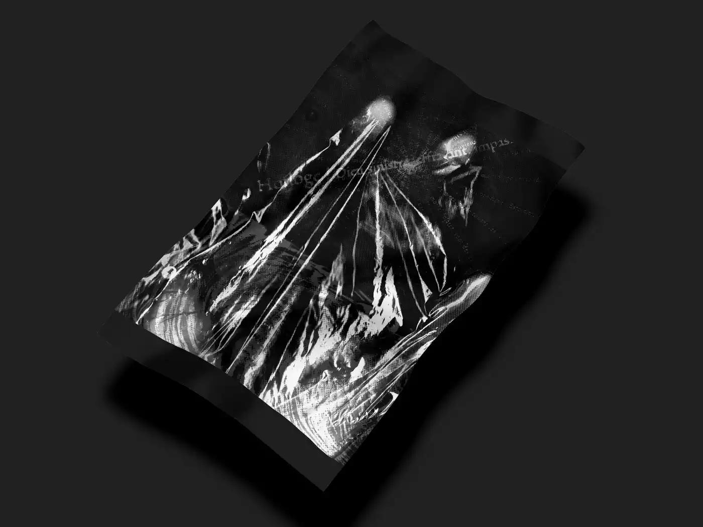